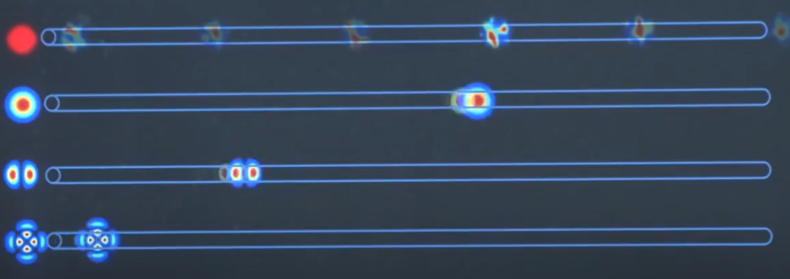
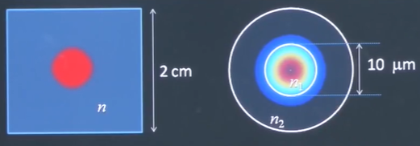
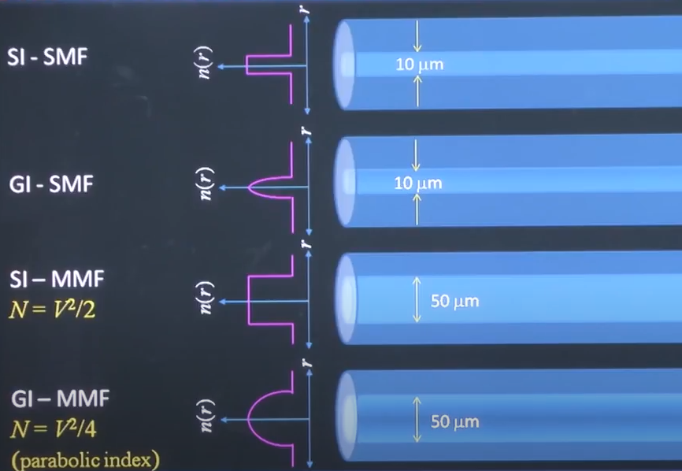
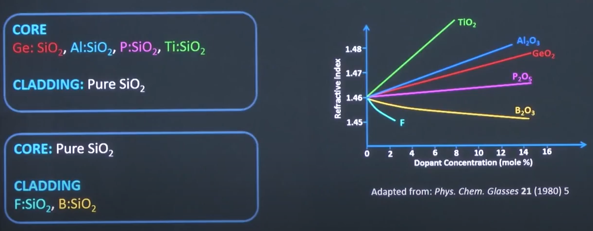
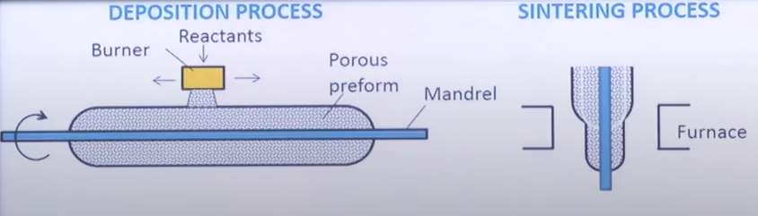
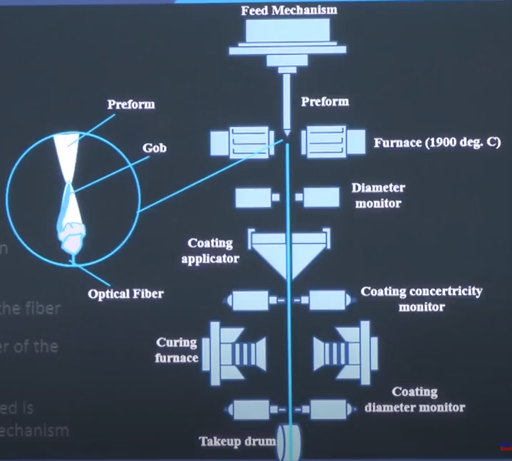
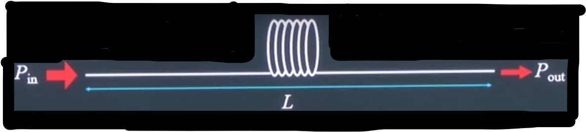
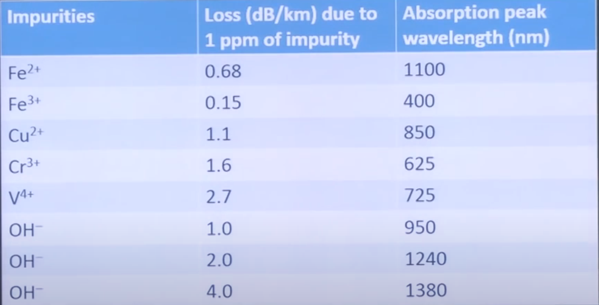

Modal analysis is needed to accurately determine the light propagation behaviour.
For transmitting light through a fibre, modal analysis is needed to optomise the propagation behaviour of the light throughout the fibre. For example, how the intensity pattern changes as the light propagates through the fibre.

The first field pattern is random, and is not uniform throughout the length of the fibre.
In the above, field patterns which are sustained throughout the length of the fibre is called a mode of the fibre. The velocity of each mode can be unique.
NOTE:Is the velocity of each mode unique? Or, can the light field have a different pattern, but the same velocity profile?

In the above, the random field pattern is fully within the one medium (core) of the fibre. This means the velocity can be described as:
v=nc(1)
The second section shows an example of when a mode propagates partially in the core, and partially in the cladding. The effective refractive index is described with:
n2<neff<n1(2)
Proportion of field in the core and in the cladding for different modes is different, hence their neff are different. That is, different modes travel with different velocities.
Guided Modes: modes for which the field is mostly confined to the core
Radiation Modes: modes for which the field radiates out in the cladding - neff<n2
These modes are orthogonal, and form a complete set. Any arbitrary field distribution can be expressed as a superposition of guided and radiation modes.
Therefore, since it is possible to completely define the propagation of individual modes, it is possible to predict the evolution of an arbitrary field pattern, based on guided and radiation modes.
For a given core and cladding radius, the number of modes depends on the numerical appature (AN), core radius (a), and the wavelength of light (λ).
A fibre with a lower numerical appature has fewer modes
A fibre with a smaller core has fewer modes
Integrating the above parameters gives the normalised frequency:
V=λ02πaANwhere AN=n12−n22(3)
Single-Mode and Multi-Mode Fibres (SMF & MMF)
Normalised Frequency
Fibre Mode
V≪2.4048
Single-Mode
V≫2.4048
Multi-Mode
V≈2.4048
Few-Mode
Single-Mode Fibre
Multi-Mode Fibre
Long Haul Communication
Local Area Networks
Core Diameter ∽10μm
Core Diameter ∽50μm
Light Source - Laser Diode
Light Source - LED
Difficult to Couple Light
Easier to Couple Light
Difficult to Splice Fibres
Not Necessary to Splice Fibres
Precision Equipment/Components Required
Cheaper System Components
Silica Glass: Δ=0.003,AN∽0.1,a=5μm
Silica Glass: Δ=0.01,AN∽0.2,a=25μm
Step and Graded Indices

2.0 Optical Fibre Fabrication
Common Materials
Glass
Fused silica glass (A.K.A silicate glass)
Currently, the most widely used material for telecommunication fibre
Low power losses
Chemically inert
Optically stable throughout material
High glass transition temperature
Halide Glass
Flouride glass
Low transmission losses at mid-infrared wavelengths
Composition: ZrF4, and BaF2,LaF3,AlF3,NaF
Under development for 2μm systems
Active Glass
Rare earth doped glass
Er/Nd/Tm doped within fused silica
Used in optical fibre amplifiers, and fibre lasers
Chalcogenide Glass
Composition: As40S58Se2 / As2S3
High optical non-linearity (long interaction length)
High losses (~1dBm−1)
Used in mid-infrared sources, fibre amplifiers, and switches
Used in short distance communication (~100m), sensing, and lighting
Fabrication
Fabrication of Pre-Form
The Pre-Form determines the reflective index profile, geometry of core and cladding, and core concentricity. The quality determines the propagation characteristics of the final fibre.

NOTE:Germanium develops colour-centres, which absorbs ionising radiation. Hence, Flourine is used as the cladding with undoped-core, when in an environment with ionising, nuclear radiation
A gaseous mixture of reactants is fed at the end of a rotating, silica tube. The tube is heated by a traversing, oxi-hydrogen burner. Glass particles (soot) are deposited on the internal tube wall. A thin, glass layer is formed, as the soot is vitrified by the burner. Finally, the temperature of the burner is increased to ~2000°C, in order for the tube to collapse into a solid preform.
Outside Vapour Deposition

Layer by layer, soot is deposited on an aluminium oxide, or graphite, mandrel. After deposition, the central mandrel is removed. Finally, the hollow, porous preform is dehydrated and collapsed in an inert environment, through sintering.
Drawing Fibre from the Pre-Form

Using a precision-controlled, feeding mechanism, preform is lowered into the high-purity graphite furnace. Gravity draws the glass into a glob. Acrylic is coated on the fibre, and cured in a furnace, before the final diameter is measured. Finally, the fibre is wound on a drum.
Fibre Bundle
Coherent Bundle - the relative positions of the fibres at the input and output are the same.
Image is not scrambled
Used in endoscopy
Incoherent Bundle - the fibres are not aligned in a particular way.
Image is scrambled
Used as a coder or illumination
Decoded using a similar bundle
3.0 Transmission Characteristics
Optical Attenuation

Loss=10log(PoutPin)(4)
Loss Coefficient, α, with L in m:
α=L10log(PoutPin)dBm−1(5)
Loss Mechanisms
Absorptive
Intrinsic - Absoption by primary constituent materials of fibre
Caused by atomic vibration bands in the wavelength range (e.g. For SiO2 near-IR region)
A result of interaction between vibrating chemical bonds and electromagnetic fields of the light
Electronic absoption bands in certain wavelength regions (e.g. For SiO2/Ge in ultra-violate region)
Extrinsic - due to absoption by impurities

Radiative
Rayleigh Scattering - Caused by small-scale inhomogeneities frozen into the fibre at the time of fabrication
Fresnel Reflection - Power reflected back into the fibre at the output end